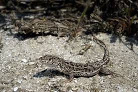
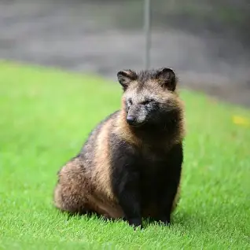
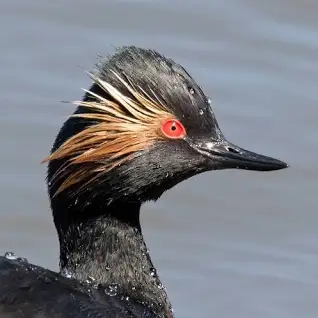
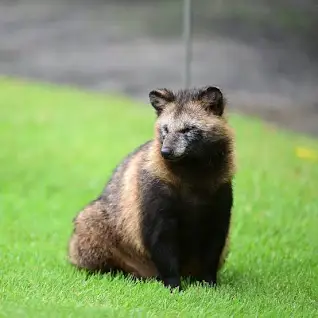
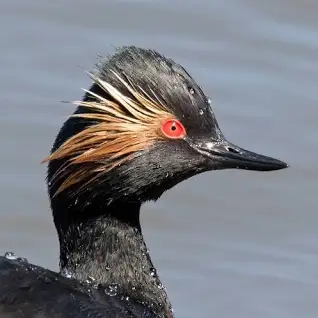

Biodiversitatea judetului Ialomita
Situat în sud –estul României, ocupând o însemnată parte din subdiviziunea estică a Câmpiei Române, Bărăganul, judeţul Ialomiţa este una dintre cele mai vechi unităţi administrativ teritoriale ale ţării. Suprafaţa totală a judeţului este de 4453 km2 ; adică 1.9% din suprafaţa totală a ţării. La 31 decembrie 2013, organizarea administrativă a teritoriului acestui judeţ era următoarea: 7 municipii şi oraşe ( din care 3 municipii) , 59 comune şi 127 de sate. Reşedinţa judeţului este municipiul Slobozia. Judeţul se învecinează cu judeţele: Prahova, Buzău, Brăila (la nord), Constanţa ( la est) , Călăraşi (la sud) şi Ilfov ( la vest).
Acest teritoriu se află la interferenţa unor vechi rute comerciale care-i dau şi acum caracterul de zonă de tranzit între Orient (prin Constanţa) şi Occident. Judeţul Ialomiţa este străbătut de cursul inferior al râului cu acelaşi nume, dar şi de fluviul Dunărea, între braţele sale Borcea şi Dunărea Veche aflându-se o mare suprafaţă cu potenţial agricol ridicat.
Forma de relief dominantă este câmpia , la ea adăugându-se lunca Dunării şi lunca Ialomiţei.
Clima judeţului este continentală, caracterizându-se printr-o amplitudine termică anuală şi diurnă relativ mare şi prin cantităţile reduse de precipitaţii: în ultimii 3 ani fenomenul specific zonei fiind seceta prelungită cu efecte negative asupra ciclului vegetativ al plantelor.
O altă caracteristică a climei judeţului Ialomiţa o constituie regimul vânturilor , direcţiile lor predominante fiind din nord –est şi nord.
Reţeaua hidrografică a judeţului este reprezentată de fluviul Dunărea cu braţul Borcea şi Dunărea Veche, râurile Ialomiţa şi Prahova, lacurile ( Piersica, Banţu), lacurile de albie ( Amara) şi limanurile fluviatile(Iezer, Strachina, Fundata, etc.).
Subsolul judeţului este sărac în resurse minerale, totuşi prospecţiunile geodezice au condus la descoperirea unor zăcăminte de petrol şi gaze naturale în perimetrul Urziceni – Colelia – Grindu care sunt deja în exploatare. Pentru perioada feudalismului timpuriu ( sec. VI – XIV) au fost semnalate, în urma cercetărilor, 30 de așezări, printre care amintim: Dridu, Oraşul de Floci (1431), Alexeni (1431), Stelnica, Borduşani, Făcăeni, Vlădeni, Frăţileşti (1467), Slobozia (1514), Feteşti (1528), ş.a.
Fauna


 



Flora